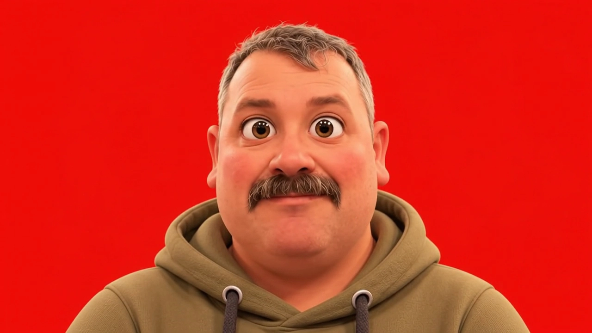

FabLab Guides · isoleret test
En lille figur, der følger med.
Bevæg musen rundt om figuren. Hold markøren ved ansigtet for at få øjenkontakt.

På touchskærme og med reduceret bevægelse vises et roligt portræt. Den røde baggrund er bevaret fra kildematerialet. Ingen video afspilles.